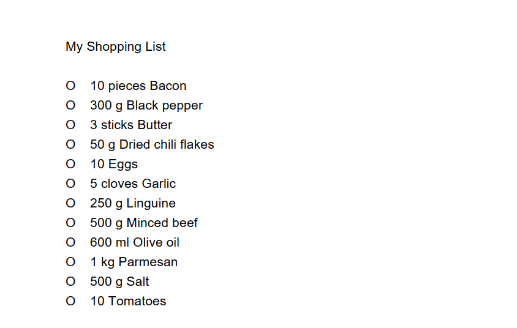

Overview
AddressBook - Level 3 is a desktop address book application used for teaching Software Engineering principles. The user interacts with it using a CLI, and it has a GUI created with JavaFX. It is written in Java, and has about 10 kLoC.
Summary of contributions
-
Major enhancement: added the ability to undo/redo previous commands
-
What it does: allows the user to undo all previous commands one at a time. Preceding undo commands can be reversed by using the redo command.
-
Justification: This feature improves the product significantly because a user can make mistakes in commands and the app should provide a convenient way to rectify them.
-
Highlights: This enhancement affects existing commands and commands to be added in future. It required an in-depth analysis of design alternatives. The implementation too was challenging as it required changes to existing commands.
-
Credits: {mention here if you reused any code/ideas from elsewhere or if a third-party library is heavily used in the feature so that a reader can make a more accurate judgement of how much effort went into the feature}
-
-
Minor enhancement: added a history command that allows the user to navigate to previous commands using up/down keys.
-
Code contributed: [Functional code] [Test code] {give links to collated code files}
-
Other contributions:
-
Project management:
-
Managed releases
v1.3-v1.5rc(3 releases) on GitHub
-
-
Enhancements to existing features:
-
Documentation:
-
Did cosmetic tweaks to existing contents of the User Guide: #14
-
-
Community:
-
Tools:
-
Integrated a third party library (Natty) to the project (#42)
-
Integrated a new Github plugin (CircleCI) to the team repo
-
-
{you can add/remove categories in the list above}
Contributions to the User Guide
Given below are sections I contributed to the User Guide. They showcase my ability to write documentation targeting end-users. |
Contributions to the Developer Guide
Given below are sections I contributed to the Developer Guide. They showcase my ability to write technical documentation and the technical depth of my contributions to the project. |
[Proposed] Undo/Redo feature
Proposed Implementation
The undo/redo mechanism will be facilitated by VersionedCookingPapa.
It extends CookingPapa with an undo/redo history, stored internally as an cookingPapaStateList and currentStatePointer.
Additionally, it implements the following operations:
-
VersionedCookingPapa#commit()— Saves the current state of CookingPapa in its history. -
VersionedAddressBook#undo()— Restores the previous state of CookingPapa from its history. -
VersionedAddressBook#redo()— Restores a previously undone state of CookingPapa from its history.
These operations are exposed in the Model interface as Model#commitCookingPapa(), Model#undoCookingPapa() and Model#redoCookingPapa() respectively.
Given below is an example usage scenario and how the undo/redo mechanism behaves at each step.
Step 1. The user launches the application for the first time. The VersionedCookingPapa will be initialized with the initial address book state, and the currentStatePointer pointing to that single CookingPapa state.
Step 2. The user executes cookbook remove recipe 2 command to delete the 2nd recipe in the cookbook of CookingPapa.
The delete command calls Model#commitCookingPapa(), causing the modified state of the address book after the cookbook remove recipe 2 command executes to be saved in the cookingPapaStateList,
and the currentStatePointer is shifted to the newly inserted state of CookingPapa.
Step 3. The user executes inventory add ingredient i/Egg q/10 to add a new ingredient to the inventory.
The inventory add command also calls Model#commitCookingPapa(), causing another modified address book state to be saved into the cookingPapaStateList.
If a command fails its execution, it will not call Model#commitCookingPapa(), so that state of CookingPapa will not be saved into the cookingPapaStateList.
|
Step 4. The user now decides that adding the ingredient to the inventory was a mistake, and decides to undo that action by executing the undo command.
The undo command will call Model#undoCookingPapa(), which will shift the currentStatePointer once to the left, pointing it to the previous address book state, and restores CookingPapa to that state.
If the currentStatePointer is at index 0, pointing to the initial state of CookingPapa, then there will be no previous state of CookingPapa to restore.
The undo command uses Model#canUndoCookingPapa() to check if this is the case. If so, it will return an error to the user rather than attempting to perform the undo.
|
The following sequence diagram shows how the undo operation works:
The lifeline for UndoCommand should end at the destroy marker (X) but due to a limitation of PlantUML, the lifeline reaches the end of diagram.
|
The redo command does the opposite — it calls Model#redoCookingPapa(), which shifts the currentStatePointer once to the right, pointing to the previously undone state, and restores CookingPapa to that state.
If the currentStatePointer is at index cookingPapaStateList.size() - 1, pointing to the latest CookingPapa state, then there are no undone CookingPapa states to restore. The redo command uses Model#canRedoCookingPapa() to check if this is the case. If so, it will return an error to the user rather than attempting to perform the redo.
|
Step 5. The user then decides to execute the command list. Commands that do not modify the address book, such as list, will usually not call Model#commitCookingPapa(), Model#undoCookingPapa() or Model#redoCookingPapa(). Thus, the cookingPapaStateList remains unchanged.
Step 6. The user executes cart clear, which calls Model#commitCookingPapa(). Since the currentStatePointer is not pointing at the end of the cookingPapaStateList,
all CookingPapa states after the currentStatePointer will be purged. We designed it this way because it no longer makes sense to redo any add commands. This is the behavior that most modern desktop applications follow.

The following activity diagram summarizes what happens when a user executes a new command:
Design Considerations
Aspect: How undo & redo executes
-
Alternative 1 (current choice): Saves the entire state of CookingPapa.
-
Pros: Easy to implement.
-
Cons: May have performance issues in terms of memory usage.
-
-
Alternative 2: Implement commands of
addandremoveto have the same format.-
Pros: Ease for users to easily undo or redo their own mistakes. Also gives overall lower memory usage
-
Cons: Poorer user experience.
-
Eventually, we decided that saving the memory state of the project is still manageable, given the current scale of the project.
Configuration
Certain properties of the application can be controlled (e.g user prefs file location, logging level) through the configuration file (default: config.json).
Documentation
Refer to the guide here.
Appendix A: Product Scope
Target user profile:
-
has a need to manage a significant number of recipes
-
has a need to manage food resources efficiently
-
prefer desktop apps over other types of apps
-
can type fast
-
prefers typing over mouse input
-
is reasonably comfortable using CLI apps
Value proposition: manage recipes and food resources faster than a typical mouse/GUI driven app
Appendix B: User Stories
Priorities: High (must have) - * * *, Medium (nice to have) - * *, Low (unlikely to have) - *
| Priority | As a … | I want to … | So that … |
|---|---|---|---|
|
beginner cook |
find new recipes easily |
I don’t waste time searching though recipes from different sources |
|
regular cook |
record my own recipes |
I can refer to them easily in future |
|
forgetful person |
add ingredients for my planned meals to a grocery list easily |
I know what I need to get when shopping |
|
disorganized person |
keep track of the ingredients I have at home |
I can plan my meals better |
|
busy student |
cook a meal with the ingredients I already have |
I don’t waste time on grocery shopping |
|
low-income individual |
cook a meal with the ingredients I already have |
I can save money |
|
person with food allergies |
cook meals that I am not allergic to |
I do not have an allergic reaction |
|
regular cook |
edit recipes |
I can tweak a recipe to my liking |
|
regular cook |
set a timer during meal preparation |
I can control the quality of my meal |
|
CS student |
cook a quick meal |
I can spend more doing CS2103T |
|
vegetarian |
find recipes that don’t contain meat |
I can keep to my diet constraints |
|
picky eater |
choose recipes that only contain the food I like |
I can enjoy the meals I cook |
|
working adult |
plan meals for the next week |
I can buy all the ingredients I need in one trip |
|
person with health issues |
record the meals I eat |
I can share the information with my doctor easily |
|
health-conscious person |
keep track of the nutritional value of the food I eat |
I can meet my nutritional goals |
|
regular gym-goer |
keep track of my dietary intake |
I can meet my fitness goals |
|
obesity fighter |
keep track of my calorie and fat intake |
I can lose weight |
|
stay-at-home parent |
plan a variety of meals for the week |
I can make sure that my family eats healthily |
|
kiasu parent |
know how much ingredients I need for 2 weeks |
ensure my family never runs out of food |
|
party host |
scale recipe ingredients by the number of servings |
I can prepare meals for large groups |
|
cafe manager |
keep track of the expiry dates of my ingredients |
I know what ingredients I need to stock up on |
Appendix C: Use Cases
(For all use cases below, the System is Cooking Papa and the Actor is the user, unless specified otherwise)
Use case: UC01 - Create a recipe
MSS:
1. User chooses to create a recipe.
2. Cooking Papa requests for details of the recipe.
3. User enters the requested details.
4. Cooking Papa creates the recipe and stores it in the cookbook, and displays the newly created recipe.
Use case ends.
Extensions:
3a. Cooking Papa detects an error in the entered data.
3a1. Cooking Papa shows an error message.
3a2. Cooking Papa requests for the correct data.
3a3. User enters new data.
Steps 3a1 to 3a3 are repeated until the data entered is correct.
Use case resumes from step 4.
*a. At any time, User chooses to end the creation of a recipe.
*a1. Cooking Papa cancels creation of a recipe.
Use Case: UC02 - Search for recipes MSS: 1. User chooses to search recipes. 2. Cooking Papa requests for the tag to be searched. 3. User enters the tag. 4. Cooking Papa displays recipes with the corresponding tag. Use case ends.
Use Case: UC03 - View a recipe
MSS:
1. User chooses to view recipes.
2. Cooking Papa requests for the index of the recipe.
3. User enters the requested index.
4. Cooking Papa displays the entire recipe with the corresponding index.
Use case ends.
Extensions:
3a. The given index is invalid.
3a1. Cooking Papa shows an error message.
3a2. Cooking Papa requests for the correct index.
3a3. User enters the new index.
Steps 3a1-3a3 are repeated until the index entered is valid.
Use case resumes from step 4.
Use case: UC04 - Add a recipe's ingredients to the cart
MSS:
1. User chooses to add a recipe's ingredients to the cart.
2. Cooking Papa requests for the index of the recipe.
3. User enters the requested index.
4. Cooking Papa add the ingredients to the cart.
Use case ends.
Extensions:
3a. The given index is invalid.
3a1. Cooking Papa shows an error message.
3a2. Cooking Papa requests for the correct index.
3a3. User enters the new index.
Steps 3a1-3a3 are repeated until the index entered is valid.
Use case resumes from step 4.
Appendix D: Non Functional Requirements
-
Should work on any mainstream OS as long as it has Java
11or above installed. -
Should be able to hold up to 500 recipes without a noticeable sluggishness in performance for typical usage.
-
A user with above average typing speed for regular English text (i.e. not code, not system admin commands) should be able to accomplish most of the tasks faster using commands than using the mouse.
{More to be added}
Appendix F: Product Survey
Product Name
Author: …
Pros:
-
…
-
…
Cons:
-
…
-
…
Appendix G: Instructions for Manual Testing
Given below are instructions to test the app manually.
| These instructions only provide a starting point for testers to work on, and are in no way exhaustive. |
Below are some test inputs for manual testing, please note that these test inputs are only valid for the sample
cookbook, cart, and inventory data, i.e. the data that is present when Cooking Papa is opened for the first time. If
the data has been modified prior to using these commands, please delete the .json files in /data (cookbook
.json, inventory.json, cart.json).
Launch and Shutdown
-
Initial launch
-
Download the jar file and copy into an empty folder
-
Double-click the jar file
Expected: Shows the GUI with a set of sample cookbook, inventory, and cart.
-
Adding a recipe to the cookbook
Please note that these cases are to be tested individually, i.e. should test case
a be executed, executing test case e will not be valid as there is already an existing recipe with the recipe name
"Name". In such cases, please remove the existing recipe in the cookbook using cookbook remove recipe INDEX.
-
Prerequisites: List all recipes in the cookbook using the
cookbook listcommand, and using the sample cookbook. -
Test case:
cookbook add recipe n/Name d/Description i/Ingredient q/1 s/Step 1 t/Tag
Expected: a new recipe is added to the cookbook, and displayed as the index 3 (one-based index) in the cookbook panel. -
Test case:
cookbook add recipe n/Name d/Description i/Ingredient q/1 s/Step 1 t/Tag(a duplicate recipe)
Expected: no recipe will be added, and an error message indicating that there is already an existing recipe with the same name in the cookbook will be displayed. -
Test case:
cookbook add recipe n/Name d/Description i/Ingredient q/1 s/Step 1 s/Step 1 t/Tag(a recipe with duplicated steps)
Expected: no recipe will be added, and an error message indicating that there is a duplicate step in the command will be displayed. -
Test case:
cookbook add recipe n/Name d/Description i/Ingredient q/1 i/Ingredient q/1 s/Step 1t/Tag(a recipe with duplicated ingredients)
Expected: a new recipe is added to the cookbook, with the duplicate ingredients being added to one another. The new recipe will be displayed as the index 3 (one-based index) in the cookbook panel.
Removing a recipe from the cookbook
Please note that these test cases are to be tested individually, i.e. should test case a be executed, executing test
case a again will remove a different recipe from the cookbook. In this case, after executing test case a once, to
execute it again, please add back the removed recipe using cookbook add recipe … or by deleting the .json files.
-
Prerequisites: List all recipes in the cookbook using the
cookbook listcommand, and using the sample cookbook. -
Test case:
cookbook remove recipe 1
Expected: a recipe (Aglio Olio) will be removed from the cookbook. -
Test case:
cookbook remove recipe 0andcookbook remove recipe 5
Expected: since the indices in the recipe panel are one-based, i.e. starting from 1, the former command is out-of-bounds; the latter command is out-of-bounds because there are only 4 recipes in the cookbook. Both commands will show an error message reflecting the invalid recipe indices provided.
Searching for recipes by tags
Please note for this search command, with more tags being included, the number of results returned will be greater, i .e. if there are three tags included, the recipes returned do not have to be tagged with all three tags.
-
Prerequisites: List all recipes in the cookbook using the
cookbook listcommand, and using the sample cookbook. -
Test case:
cookbook search tag t/Simple
Expected: the recipe panel will be updated to show only two recipes, both which are tagged with "Simple". -
Test case: 'cookbook search tag t/Simple t/Celebrity' Expected: the recipe panel will be updated to show only three recipes, of these three recipes, they are either tagged with "Simple" or "Celebrity".
Exporting the cart to a PDF file
Please note that for the export command, the result is based on the sample cart.
a. Prerequisite: have the sample cart data in cart.json, if the file has been modified, please exit Cooking Papa,
and delete it in /data, and run Cooking Papa again.
-
Test case:
cart exportExpected: a PDF file will be created in the same folder as Cooking Papa, and the content should look like:Figure 1. Content of cart.pdf created from sample cart data -
Test case:
cart export, with a previously createdcart.pdfopen in a program Expected: an error will be thrown, asPdfExporteris unable to modify a file that is currently open in another program. Closing the file and executing the command will return the same result (assuming the cart data is the same as the sample cart data) as test case a.
Appendix H: Effort
Achievements/ challenges |
Effort required |
Difficulty level (out of |
Greater number of entities than AB3 |
As AB3 only had one overarching entity ( |
|
Development of the GUI |
As the team had not much experience with regards to CSS and JavaFX, it took awhile to get rolling and adapt the aesthetics to Cooking Papa’s needs. Moreover, one challenge faced was ensuring that the GUI ran as expected on Windows, MacOS, and Linux. Additionally, the use of SceneBuilder was encouraged, however, it led to many unintended changes and extra variables which made troubleshooting a lot more complex (especially to a novice). |
|
Integrating |
We wanted to make the command more of a toggle instead
of something users had to type, as it was not intuitive. While implementing the button was rather trivial, one
requirement of the app was that it had to be testable via the command line. Connecting the command from the command
line ( In hindsight, perhaps greater experience with GUIs would have made this process easier, but our team were all novices in that aspect, and being able to pull this off, especially when we could have simply left it as the status quo, is a huge achievement. |
|
PROJECT: PowerPointLabs
{Optionally, you may include other projects in your portfolio.}